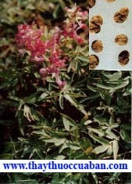

Khỏi hẳn rối loạn tiền đình sau 2 tháng uống
thuốc
Khỏi hẳn rối loạn tiền đình sau 2 tháng uống
thuốc
Tên khác:
Diên hồ sách, Huyền hồ sách, Nguyên hồ sách, Khuê nguyên hồ, Sanh diên hồ, Sao diên hồ, Vũ hồ sách, Trích kim noãn ...
Tên khoa học: Corydalis ambigua Champ et Schlecht.,
Họ: Papaveraceae.
Tên tiếng trung: 延 瑚 索 (Diên hồ sách)
Cây Diên hồ sách
( Mô tả, hình ảnh, thu hái, chế biến, thành phần hoá học, tác dụng dược lý ....)

Mô tả:
Cây thảo sống nhiều năm, tự sinh ở nơi sơn dã, dưới đất có rễ củ hình cầu, thân nhỏ yếu, cao chừng 0,5m, lá mọc đối có mép nguyên, hoa nở vào mùa xuân ở cuối thân cây, màu hồng nhạt hoặc hoa đỏ màu tím, hoa hình môi gồm 1 mặt há ra, sắp xếp thành chùm.
Phân bố:

Mọc ở Triết Giang, Phúc Kiến, Nhiệt Hà, loại sản xuất ở Ninh Ba, Kim Hoa, Hàng Châu thuộc Triết Giang là loại tốt. Cây này chưa thấy ở Việt Nam
Thu hái, sơ chế:
Diên hồ sách sau tiết lập xuân đào củ rửa sạch phơi nắng cất dùng.
Phần dùng làm thuốc:

Củ rễ (Corydalistuber).
Thành phần hoá học:
 Alcaloid như: corydalin, dehydrocorydalin, protin, corybolbin…
Alcaloid như: corydalin, dehydrocorydalin, protin, corybolbin…
Tác dụng dược lý:
Thuốc có tác dụng giảm đau, trấn kinh an thần, gíup ngủ tốt.
Thuốc làm tăng lưu lượng máu động mạch vành của tim thỏ cô lập.
Thuốc có tác dụng làm hạ mỡ nhẹ đối với mô hình gây xơ mỡ động mạch chuột trắng lớn.
Trên thực nghiệm còn cho thấy thuốc có tác dụng ức chế gây loét lúc thắt môn vị của chuột, ức chế loét do acid acetic hoặc loét do histamin.
Thuốc còn có tác dụng tăng tiết nội tiết tố vỏ tuyến thượng thận.
Vị thuốc Diên hồ sách
( Công dụng, Tính vị, quy kinh, liều dùng .... )
Mô tả dược liệu:

Củ rễ khô thể hiện hình cầu dẹt không nhất định, đường kính dài từ 1-1,5cm mặt ngoài màu vàng đất hoặc vàng tươi, mặt trên có sẹo dính với thân cây biểu hiện của một hõm cạn, cuối cùng của mặt dưới thường có 2-3 nhánh rãnh hay chia ra làm 3 phần. Toàn thể phân bố đầy những lằn nhăn ngang cong queo, đồng thời ở giữa có những vết lằn ngang tương đối sâu hoặc lõm xuống, củ cứng chắc màu vàng ánh, vỏ nhăn nheo không mốc mọt là loại tốt.
Bào chế: Bỏ hết tạp chất, cho vào nồi đổ giấm vào (Cứ 10 kg Diên hồ sách thì dùng 2kg giấm) đun nhỏ lửa cho giấm cạn hết. Phơi khô lúc dùng tán bột, tẩm rượu hay muối tùy theo từng trường hợp.
Tính vị:
Vị cay hơi đắng, khí ấm.
Qui kinh:
Vào kinh Phế, Can, Tỳ
Liều dùng:
4,5-9g
Công dụng:

Diên hồ sách Hoạt huyết, tán ứ, lợi khí chỉ thống.
Tẩm với rượu có tác dụng hành huyết. Tẩm giấm có tác dụng giảm đau. Dùng sống có tác dụng phá huyết, muốn điều huyết thì sao vàng.
Kiêng kỵ:
Có kinh trước kỳ, người hư huyết. Có chứng băng huyết, Rong kinh, sản hậu, huyết hư, chóng mặt thì không nên dùng. Kỵ thai.
Phân biệt:
Có nơi dùng Diên hồ sách bằng củ của rễ cây Corydalis ternata Nakai.
Ứng dụng lâm sàng của vị thuốc Diên hồ sách
Trị ho bất luận gìa hay trẻ:
Diên hồ sách 1 lượng, 2,5 chỉ khô phàn tán bột, mỗi lần uống 6g với 1 cục kẹo mạch nha ngậm nuốt từ từ (Nhân Tồn Đường Phương).
Trị chảy máu cam:
bột Diên hồ sách gói trong bông sạch nhét trong lỗ tai, hễ máu chảy bên phải thì nhét bên trái và ngược lại (Phổ Tế Phương).
Trị tiểu ra máu:
1 lượng Diên hồ sách, 7,5 chỉ Phác tiêu, tán bột, mỗi lần uống 4 chỉ sắc uống (Hoạt Nhân Thư Phương).
Trị tiểu tiện không thông:
dùng “Niệp đầu tán” trị trẻ con tiểu không thông, dùng Diên hồ sách, Xuyên luyện tử, 2 vị bằng nhau tán bột lần uống nửa chỉ đến 1 chỉ với nước sôi cho vào vài giọt dầm mè (Tiểu Nhi Chân Quyết Phương).
Trị đau phần ngoài do khí và khí kết khối:
Diên hồ sách tán bột với tụy tạng heo, xắt ra từng miếng, nấu chín, chấm bột thuốc ăn (Thắng Kim Phương).
Trị đau tim do nhiệt quyết, khi đau khi không, lâu ngày khó trị, mình nóng chân lạnh:
Huyền hồ sách bỏ vỏ, dùng thịt quả Kim linh tử, 2 vị bằng nhau tán bột uống với rượu nóng hoặc nước sôi lần 2 chỉ (Thánh Huệ Phương).
Trị bệnh khí huyết của đàn bà, quặn đau trong bụng, kinh nguyệt không đều:
Huyền hồ sách bỏ vỏ sao giấm, Đương quy tẩm rượu sao mỗi thứ 1 lượng, Quất hồng 2 lượng tán bột trộn rượu, nấu viên hồ làm bằng hạt ngô đồng, lần uống 100 viên lúc đói với nước dấm sắc, uống trung với Ngải cứu (Phổ Tế Phương).
Trị các loại đau sau khi sinh.
Hễ sau khi sinh đẻ, những ô uế trong người chưa ra sạch, bụng căng đầy và huyết vận sau khi sinh, tức cứng ở tim hoặc sốt rét không dứt hoặc bứt rứt, bồn chồn, tay chân hâm hấp nóng, khí lực muốn hết. Các chứng ấy đều có thể dùng Diên hồ sách sao nghiền uống với rượu, mỗi lần 6g (Thánh Huệ Phương).
Trị trẻ con đau quặn trong ruột:
Diên hồi sách, Hồi hương, 2 vị bằng nhau, nghiền sao, uống lúc đói với nước cơm (Vệ Sinh Gia Giảm Phương).
Trị sán khí (thoát vị) nguy cấp:
Huyền hồ sách sao muối, Toàn yết bỏ phần độc, dùng sống, 2 vị bằng nhau tán bột, mỗi lần uống 1,5g lúc đói với rượu muối (Trực Chỉ Phương).
Trị đau đầu một bên hoặc giữa đầu chịu không nổi
dùng Huyền hồ sách 7 củ, Thanh đại 2 chỉ, Trư nha tạo giác 2 trái bỏ vỏ hạt tán bột trộn nước làm viên như hạt Hạnh nhân lớn. Khi dùng lấy một viên hoà nước gịo vào mũi bệnh nhân, đau bên nào giọt bên ấy, đồng thời trong miệng ngậm 1 đồng tiền bằng đồng khi có nhiều nhớt nhãi chảy ra thì bớt (Vĩnh Loại Kiềm Phương).
Trị té ngã từ trên cao rơi xuống, làm đau nhức gân cốt
dùng Diên hồ sách nghiền bột, uống với rượu đậu lần 2 chỉ ngày 2 lần (Thánh Huệ Phương).
Trị đàn bà đau bụng do khí ngưng huyết trệ
dùng ‘Diên Hồ Sách Tán’ gồm Diên hồ, Đương quy, Xuyên khung, Quế tâm, Mộc hương, Chỉ xác, Xích thược, Đào nhân, Địa hoàng (Phụ Khoa Phương).
Trị đau ở vùng vị quản:
Diên hồ sách, Ngũ linh chi, Nga truật, Cao lương khương, Đương quy (Dũ Thống Tán- Thẩm Thị Tôn Sinh).
Trị đau bụng do bế kinh:
Diên hồ sách, Đương quy, Thược dược, Hậu phác mỗi thứ 3 chỉ, Tam lăng, Nga truật, Mộc hương mỗi thứ 1,5 chỉ. Sắc uống (Diên Hồ Sách Thang - Lâm Sàng Thường Dụng Trung Dược Thủ Sách).
Trị đau bụng có kinh:
Diên hồ sách (sao rượu) 2 lượng, Hương phụ (sao dấm) 4 lượng. Tán bột lần uống 2 chỉ với rượu nóng (Lâm Sàng Thường Dụng Trung Dược Thủ Sách).
Trị loét dạ dầy tá tràng, các chứng đau nhức do viêm dạ dầy, đau thần kinh chức năng dạ dầy do khí trệ hoặc kiêm ứ huyết sinh ra:
Diên hồ sách 9 phần. Thiên tử 1 phần tán bột lần uống 3 chỉ, ngày 2-3 lần, uống với nước (Thống Kinh Tán - (Lâm Sàng Thường Dụng Trung Dược Thủ Sách).
Trị đau nhức thần kinh mặt
Diên hồ sách, Xuyên khung, Bạch chỉ mỗi thứ 5 chỉ, Thương nhĩ tử 3 chỉ sắc uống (Lâm Sàng Thường Dụng Trung Dược Thủ Sách).
Tham khảo:
Trích dẫn y văn
Diên hồ sách chủ thận khí, phá sản hậu ác lộ hoặc chứng đau bụng dưới của đàn bà, kết hợp với Tam lăng, Miết giáp, Đại hoàng tán bột lại càng tốt (Hải Dược Bản Thảo).
Diên hồ sách đuổi trừ được phong, trị khí, làm ấm được lưng và chân, khỏi chứng đau bụng và đau lưng, phá được bỉ tích như nổi hòn nổi cục trong bụng, huyết ứ và có thể làm cho hư thai (Chư Gia Bản Thảo).
Diên hồ sách trị được chứng tâm khí, làm giảm đau ở bụng dưới (Thang Dịch Bản Thảo).
Diên hồ sách có thể làm được huyết trệ trong khí hoặc khí trệ trong huyết, vì vậy chuyên trị được chứng bệnh đau nhức toàn thân, thông lợi tiểu tiện (Bản Thảo Cương Mục).
Diên hồ sách vị cay khí ấm, không độc, nhập vào kinh Túc quyết âm. Cũng nhập vào kinh thủ thái âm. Khí ấm thì có thể làm cho tất cả được điều hòa nhờ vào chỗ điều hòa đó mà khí lưu hành thông thương tới các cơ quan được. Vị cay cho nên có thể nhuận mà tẩu tán được, khi nó tẩu tán thì huyết phải hoạt bát lưu lợi. Khi khí đã lưu hành huyết đã trơn tru thì có thể phá được những ứ đọng của các chứng bệnh sản hậu vậy (Bản Thảo Kinh Sơ).
Diên hồ sách được khí trệ ở trong huyết, huyết trệ ở trong khí chi nên hễ những chứng kinh nguyệt không đều, đau tim bụng đột ngột, đau căng bụng dưới, thai không xuống, nổi hòn, nổi cục đau đớn huyết vận huyết sung sau khi sinh, tổn thương do chấn thương, chẳng kể là huyết hay khí tích lại ở đó mà không tan đi được, cần phản dùng vị này mới có thể thông đạt được...Những người bệnh quá suy nhược cần phải uống kết hợp thêm với thuốc bổ, còn không thì chỉ hao hại thêm mà không có ích lợi gì hết vậy (Bản Thảo Cầu Chân)
Diên hồ sách hành được huyết trệ trong khí, khí trệ trong huyết, chữa được mọi chứng đau khắp cả người, trên cũng như dưới, thường dùng 1 mình thì công hiệu nhiều, cho nên trong thuốc điều kinh hay dùng đến nó. Nhưng không có công bổ khí, lại thiếu nuôi dưỡng vinh huyết, chỉ nhờ tính cay ấm mà công vào chỗ ngừng đuổi được cái trệ, cho nên đối với người hư chứng thì nên dùng nó với thuốc bổ, bằng không chỉ làm tổn hại mà chẳng lợi ích gì (Dược Phẩm Vậng Yếu).
Diên hồ sách có tác dụng hoạt huyết lợi khí mà có tác dụng giảm đau lại rất mạnh. Hễ khí huyết ngưng trệ, đau nhức ngực bụng thì nó là thuốc chủ yếu. Tính của ấm vị cay cho nên dùng trong chứng hàn uất. Những chứng do huyết nhiệt gây ra bệnh kinh nguyệt sớm, hoặc huyết nóng vọng hành đều nên kiêng dùng nó (Trung Dược Học).
Diên hồ sách có tác dụng hoạt huyết, hành khí, tác dụng chỉ thống mạnh, đi vào phần huyết và phần khí, vì vậy khí huyết ngưng trệ gây nên đau nhức vùng bụng, ngực đều có thể dùng vị này (Thực Dụng Trung Y Học).
Nơi mua bán vị thuốc DIÊN HỒ SÁCH đạt chất lượng ở đâu?
Trước thực trạng thuốc đông dược kém chất lượng, nguồn gốc không rõ ràng,... xuất hiện tràn lan trên thị trường, làm ảnh hưởng tới hiệu quả điều trị cũng như ảnh hưởng tới sức khỏe của bệnh nhân. Việc lựa chọn những địa chỉ uy tín để mua thuốc đông dược là rất quan trọng và cần thiết. Vậy khách hàng có thể mua vị thuốc DIÊN HỒ SÁCH ở đâu?
DIÊN HỒ SÁCH là vị thuốc nam quý, được sử dụng rộng rãi trong YHCT. Hiện tại hầu hết các cửa hàng thuốc đông dược, phòng khám đông y, phòng chẩn trị YHCT... đều có bán vị thuốc này. Tuy nhiên người mua nên chọn những địa chỉ có uy tín, đảm bảo chất lượng, có giấy phép hoạt động để mua được vị thuốc đạt chất lượng.
Với mong muốn bệnh nhân được sử dụng những loại dược liệu đúng, chất lượng tốt, phòng khám Đông y Nguyễn Hữu Toàn không chỉ là đia chỉ khám chữa bệnh tin cậy, uy tín chất lượng mà còn cung cấp cho khách hàng những vị thuốc đông y (thuốc nam, thuốc bắc) đúng, chuẩn, đạt chuẩn chất lượng. Các vị thuốc có trong tiêu chuẩn Dược điển Việt Nam đều được nghành y tế kiểm nghiệm đạt chất lượng tiêu chuẩn.
Vị thuốc DIÊN HỒ SÁCH được bán tại Phòng khám là thuốc đã được bào chế theo Tiêu chuẩn NHT.
Giá bán vị thuốc DIÊN HỒ SÁCH tại Phòng khám Đông y Nguyễn Hữu Toàn: Gọi 18006834 để biết chi tiết
Tùy theo thời điểm giá bán có thể thay đổi.
+ Khách hàng có thể mua trực tiếp tại địa chỉ phòng khám: Cơ sở 1: Số 481 lô 22 Lê Hồng Phong, Phường Gia Viên, Thành phố Hải Phòng
+ Mua trực tuyến: Thuốc được chuyển qua đường bưu điện. Khi nhận được thuốc khách hàng thanh toán tiền COD.
Tag: cay dien ho sach , vi thuoc dien ho sach , cong dung dien ho sach , Hinh anh cay dien ho sach , Tac dung dien ho sach , Thuoc nam
Thaythuoccuaban.com Tổng hợp
*************************